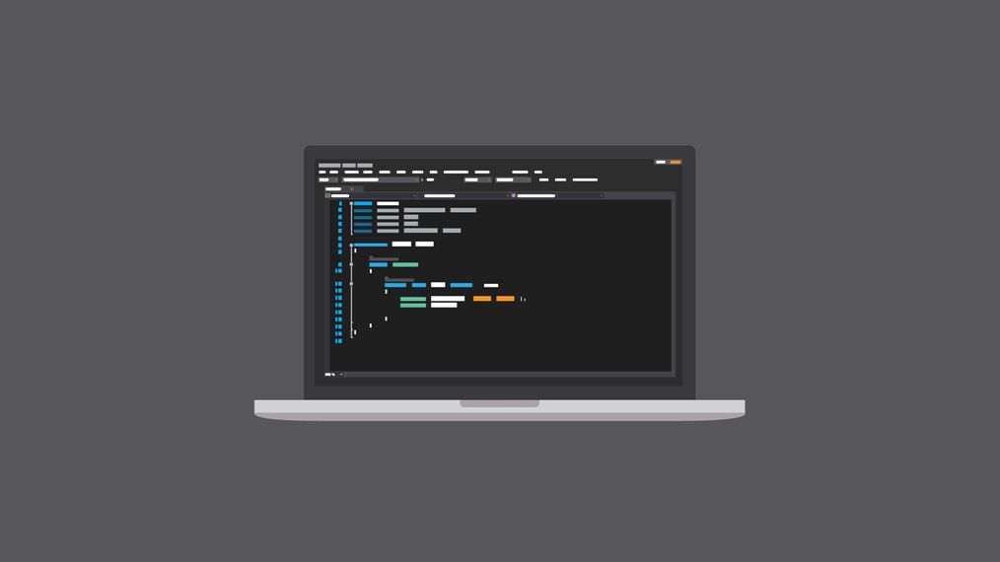
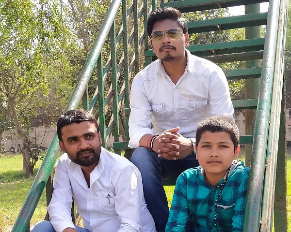

What our Student Say.......



We are stablished in 6th of nov 2015
IT hunt teams are becoming an important part of organizations’ IT teams, complementing traditional passive monitoring detection efforts with a proactive means to identify, mitigate, and remediate threats. Typically, these teams are composed of a hybrid of various capabilities spanning from counterintelligence to aggressive collection designed to identify the adversary quickly. Since hostile actors enjoy a favorable digital environment in which to conduct their nefarious operations, cyber hunt teams of experienced and well-trained professionals serve as a counterbalance to the agility and adaptability of the bad guys. More importantly, these teams serve as proactive defense assets focused on tipping and queuing transactions and behaviors that drive a more take-charge approach versus primarily relying on known hostile activity.